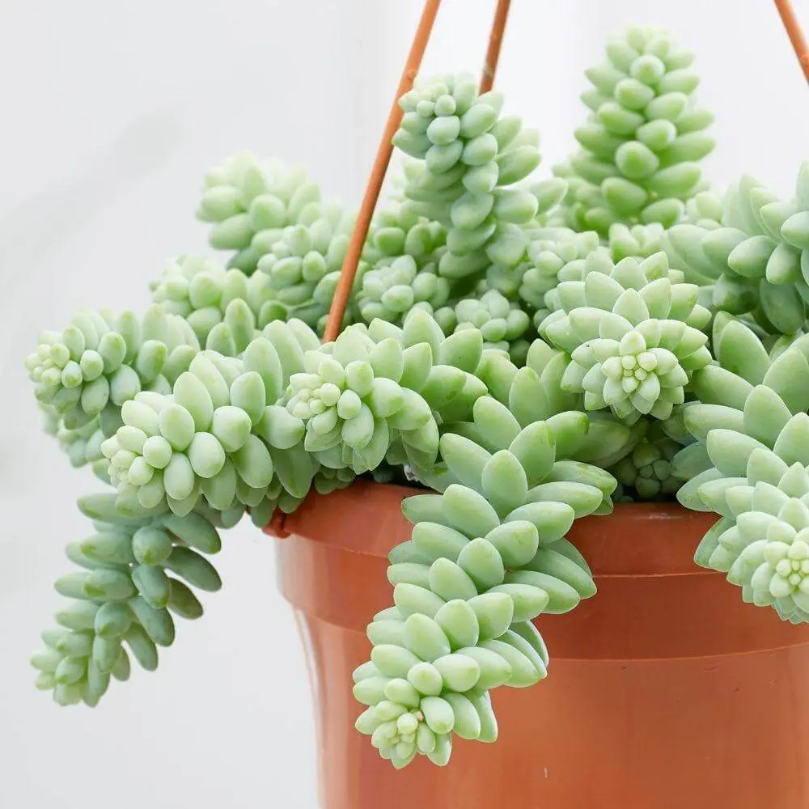
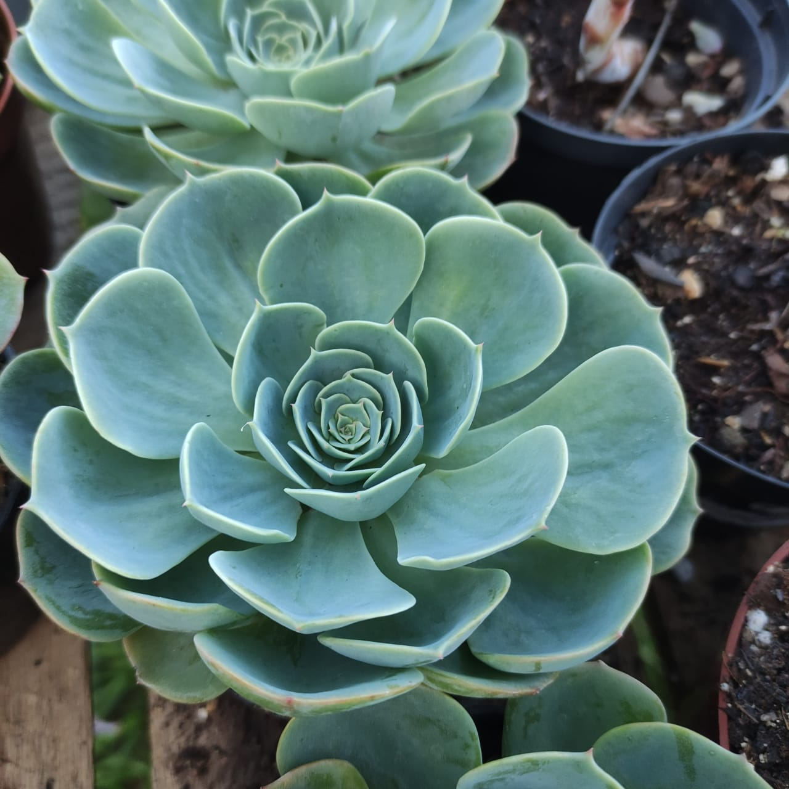
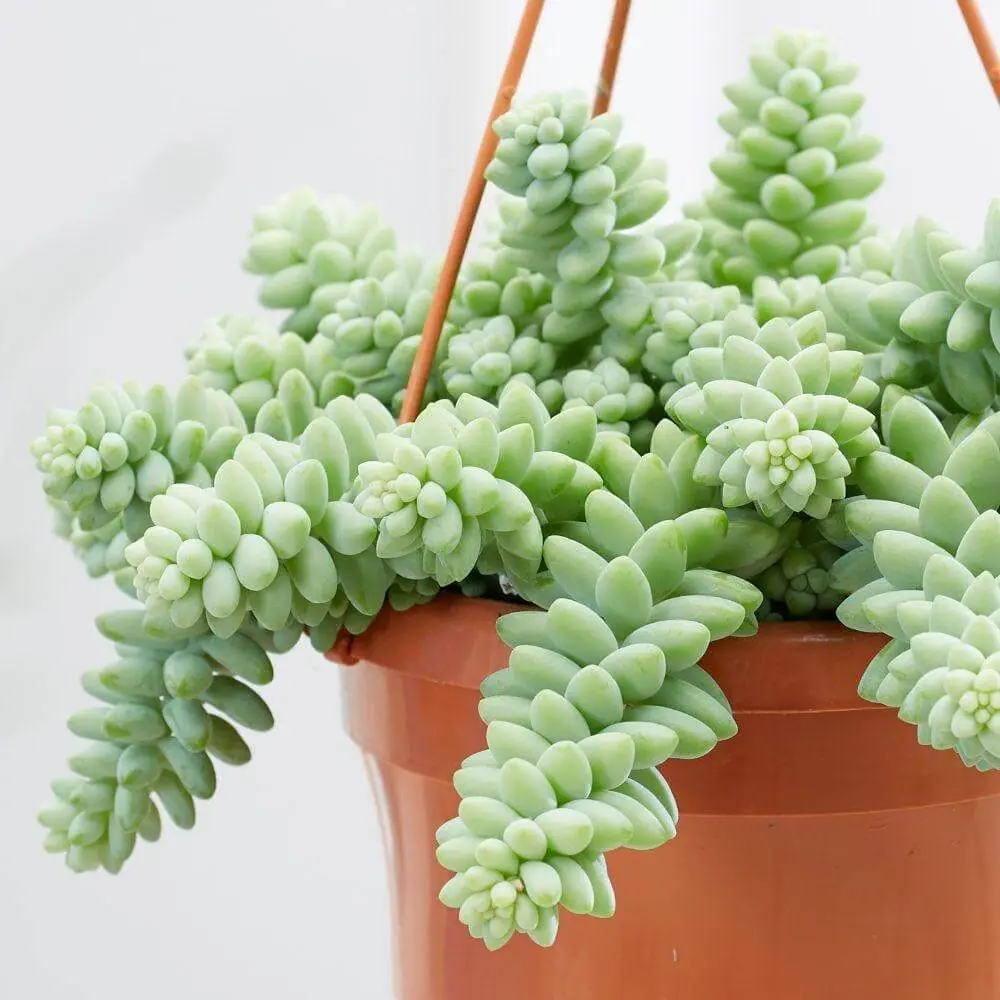
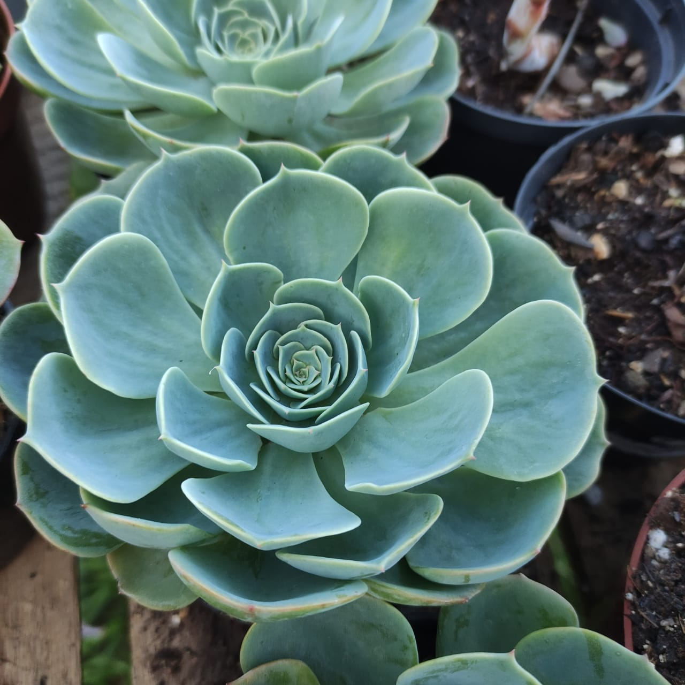

Suculenta Dedo de moça

Rosa de pedra (Echeveria Elegans)

Haworthia Fasciata

As suculentas são plantas que possuem a capacidade de armazenar água nas suas folhas, nos seus caules ou nas suas raízes.
Aliás, é devido a esta característica que conseguem sobreviver em climas áridos e secos, onde a água é escassa.

